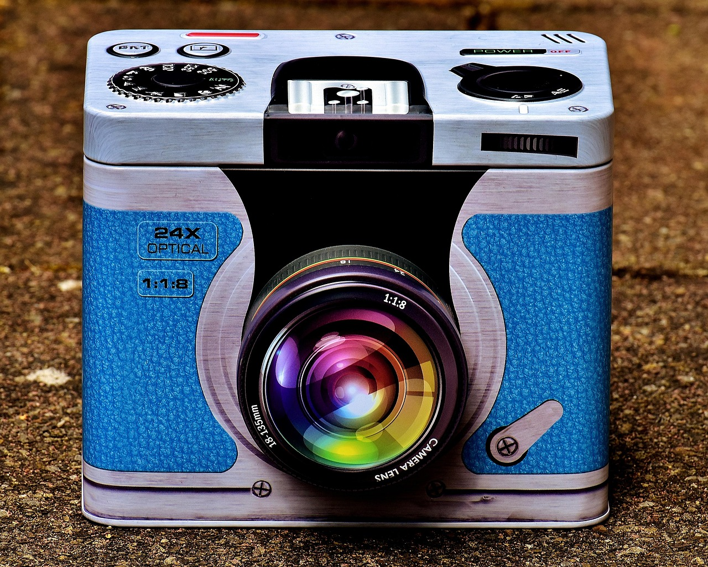

Transform Your Cluttered Library Into a Practical Storage Space: 5 Steps to Success
Transforming a library into a practical storage space might seem like a daunting task, but with a bit of strategic planning and effort, you can turn your bookshelf into a versatile storage area. Follow these five steps to make the most of your space without sacrificing your reading materials.

Photo: Alexas_Fotos / Pixabay
Assess Your Needs
Before you start rearranging, take a few minutes to assess what you really need to store. Make a list of items that could benefit from a new home, such as seasonal clothing, holiday decorations, or extra bedding. For example, if you have a guest room with limited closet space, consider moving seasonal clothing like sweaters and holiday-themed blankets from your library to this room.
Categorize Your Books
Photo: Josh Kobayashi / Pexels
While it might be tempting to keep all your books together, categorizing them by type or frequency of use can make a significant difference. Group fiction and non-fiction books separately, or sort them by topic if you have a substantial collection. Move the books you use most frequently to the middle of the shelf, making them easily accessible. Books that are used less often can be placed at the back, or even removed to create space for other items.
Use Vertical Space Wisely
Maximize the vertical space in your library by installing shelves or adding tall storage units. You can use these to store items that don’t belong on the floor, like seasonal decorations or extra holiday gear. For instance, install floating shelves above bookcases to create a hidden storage area for items like Christmas ornaments or holiday lights.
Incorporate Multi-functional Furniture
Upgrade your library with multi-functional furniture that can serve as both a storage and a reading area. Opt for a ottoman with built-in storage, or a coffee table with drawers. These can provide a convenient place to keep magazines, remotes, or other small items. For example, you could place a coffee table in the corner of your library that has a drawer for remote controls and a shelf for a small lamp.
Create a Dedicated Workspace
If your library is also a workspace, consider dedicating a specific area for it. Use a desk or a small table to store office supplies, papers, and a computer. Keep the workspace organized by using drawer dividers and file organizers. For instance, install a desk with three drawers, each divided into sections for pens, papers, and a laptop charger.
Example Scenario
Imagine you have a small home office in your library. You have a desk with limited drawer space and cluttered surfaces. By installing a desk with three drawers, each divided into sections for pens, papers, and a laptop charger, you can keep your workspace organized. Additionally, you can add a floating shelf above the desk to store your printer and other office supplies. This setup keeps everything within reach and ensures that your desk remains clear and functional.
By following these steps, you can transform your library into a practical storage space that enhances both functionality and aesthetic appeal. Remember, the key is to be strategic and thoughtful in your approach.
Recommended products
As an Amazon Associate, I earn from qualifying purchases.